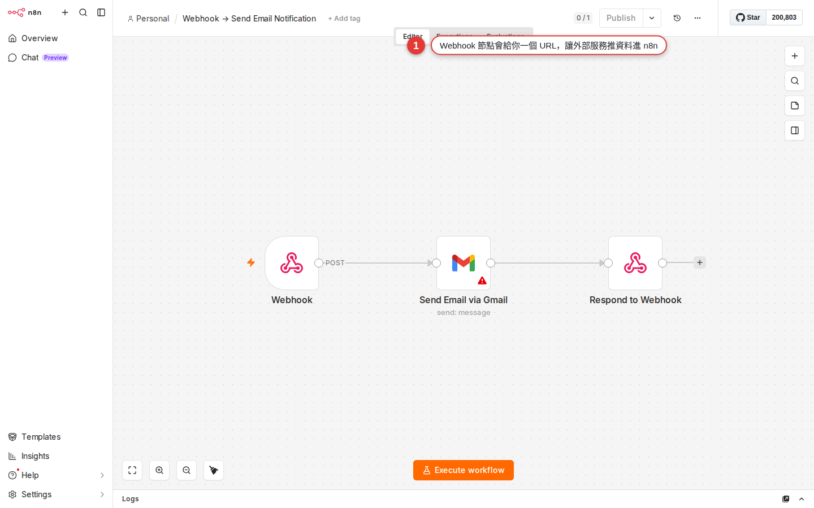

Webhook: let outside systems call into n8n
The first 21 chapters were all about "n8n going out and doing things" — running on a schedule, calling someone else's API, reading Gmail. This chapter turns it around: you let other people call you. A form is submitted, a LINE bot receives a message, an HA sensor trips, someone pushes to GitHub — all of it reaches n8n through the Webhook node. This is also the last chapter in the book, so stay with it to the wrap-up.
Why Webhook is the last piece of the puzzle
Lay out the trigger types from the last few chapters and one thing stands out:
- Manual Trigger (Chapter 10) — the workflow only moves when you press the button.
- Schedule Trigger — the time comes and the workflow moves by itself.
- Gmail / Slack / Sheets Trigger (Chapter 11) — the SaaS side has a new event and n8n polls for it on a timer to bring it back.
- The HTTP Request node (Chapter 12) — n8n goes out and calls someone else's API.
What they share: n8n is always the one making the move. One mode is missing — "an outside system wants to wake your workflow up". That is exactly what the Webhook node does.
Webhook comes up in far more situations than you would think:
- Someone fills in the contact form on your company website, and the data goes into Google Sheets, a Slack notification goes to sales, and a record goes into the CRM.
- Your LINE Official Account receives a customer message, AI Agent (Chapter 21) produces the reply, and it goes back to LINE.
- A Home Assistant door sensor detects "someone came home" and triggers an n8n workflow that logs it to Notion and turns off the company VPN while it is at it.
- Someone opens a PR on GitHub: notify QA, open a Jira ticket, run a round of internal lint.
- A new order arrives through Stripe / ECPay payments: write it into the ERP, send the invoice, add loyalty points.
Put simply: if the other system has a "webhook" or "callback URL" field you can fill in, it can call into n8n. This chapter covers how to receive the call, how to configure it, how to reply, and how to keep strangers from hammering it.
A webhook is your workflow's doorbell
The plainest way to put it:
- Schedule Trigger is an alarm clock — it goes off when the time comes.
- The HTTP Request node is you making a phone call — you go out to ask someone something.
- The Webhook node is a doorbell — someone arrives, presses it, and you know about it.
When you add a Webhook node to a workflow, n8n hands you a URL that looks like this:
https://n8n.woowtech.io/webhook/form-abc123Anyone (a person, a server, LINE, HA, a curl command) who calls that URL triggers your workflow. Everything that comes in (body, query string, headers) becomes the $json of the workflow's first item — so the nodes after it can pull the values out with an expression ({{ $json.name }} and so on).
In other words, the Webhook node turns your workflow into a simple HTTP API. Any service that knows the URL can trigger it. That is also why Zapier / Make have a "Webhooks" trigger of their own — it is the bridge every automation platform shares.
Two URLs: how Test and Production differ
Open the Webhook node's settings panel and you see two URLs — the first big trap for beginners.
| Type | When it is live | What it is for | How long it stays live |
|---|---|---|---|
| Test URL | Only after you press the Listen for test event button inside the node. | Testing while you build — press the button, call it once, see what the incoming data looks like. | It starts listening when you press the button and closes itself after one event; with no event the docs state no timeout, but in practice it stops after about two minutes, and pressing again reopens it. |
| Production URL | Live permanently once the workflow is Active (the toggle at the top right is on). | Going live — the URL you hand to an outside service for the long term. | Live for as long as the workflow stays Active; turn Active off and it is a 404. |
The differences between the two URLs are small but they matter:
- The two URLs have different paths — the Test URL is usually
/webhook-test/xxxand Production is/webhook/xxx. Look carefully and pick the right one when you copy from the node panel. - The Test URL takes one event per trigger and then closes itself, which suits tweaking fields and reading the schema.
- The Production URL does not show up as the live preview in Executions — to see the records of runs that really happened, open the Executions tab.
/webhook/, not /webhook-test/).Hands-on: catch form data and write it to Google Sheets
The most classic and most useful starter example: expose one URL, let a web form POST what the user typed, and have n8n write it into Google Sheets automatically. Once it works you can wire it straight to the contact form on your own site or landing page.
-
Create a new workflow and pick Webhook as the first node
Top right + Add workflow → you land on an empty canvas → click the + in the middle → search the nodes panel for Webhook (under the Triggers category). Add it.
-
Set the HTTP Method and the Path
Once the Webhook node is open:
- Set HTTP Method to
POST— a form sending data in uses POST by default. - Give Path any memorable English name, for example
form-contact. It is appended to the end of the URL.
Once that is set, the bottom of the node panel shows both URLs:
Test URL: https://n8n.woowtech.io/webhook-test/form-contact Production URL: https://n8n.woowtech.io/webhook/form-contact - Set HTTP Method to
-
Press Listen for test event and call it once with curl
Press Listen for test event at the top right of the Webhook node — the node goes into waiting mode (it ends by itself after the first event, and in practice it stops after about two minutes if no event arrives). Open a terminal and use
curlto send fake data to the Test URL:curl -X POST https://n8n.woowtech.io/webhook-test/form-contact \ -H "Content-Type: application/json" \ -d '{"name":"Wang Xiaoming","email":"ming@example.com","message":"I would like a quote"}'Back on the n8n canvas, the Webhook node turns green and the output panel on the right shows the JSON you just sent. Once you see the data arrive, this step is done.
-
Wire up a Google Sheets node: Append Row
Add a Google Sheets node after the Webhook node. Set Operation to Append Row in Sheet. Pick your credential (create one the first time; see Chapter 13). Choose a spreadsheet and a sheet (with the columns
name,email,message,received_atalready created).Switch every field in the Columns block to Expression mode and map them like this:
name → {{ $json.body.name }} email → {{ $json.body.email }} message → {{ $json.body.message }} received_at → {{ $now.toISO() }}Note that the Webhook node keeps the body under
$json.body, the query string under$json.query, and the headers under$json.headers. -
Execute step and confirm the Sheet really has a new row
Press Execute step on the Google Sheets node — it sends the item the Webhook just received. Open Google Sheets and check whether a row with that data appeared. If it did, the whole chain is connected.

Figure 22-1 The typical three-node shape after a Webhook trigger: an outside POST hits the Webhook node, and the data flows on to the next node to do the work. -
Save, then switch Active on at the top right
Press Save at the top right. Then flip the Active toggle at the top right to on — this step matters, because without it the Production URL is a 404.
-
Verify by calling the Production URL once
Back in the terminal, call the Production URL instead (replace
/webhook-test/with/webhook/):curl -X POST https://n8n.woowtech.io/webhook/form-contact \ -H "Content-Type: application/json" \ -d '{"name":"Li Xiaohua","email":"hua@example.com","message":"Live submission"}'Another row appears in the Sheet — this URL is now ready to hand to an outside frontend engineer or a customer. For the history, go to the Executions tab in the sidebar.
HTTP methods: which one to use when
The Webhook node's HTTP Method dropdown offers GET / POST / PUT / PATCH / DELETE / HEAD. In practice you only use the first two often; the rest come up when you are building a REST-style API.
| Method | What the caller does with it | Where the data is | Classic use |
|---|---|---|---|
GET |
The outside system wants to "look something up" or "trigger without carrying much data". | The query string (the ?key=value after the URL); n8n keeps it in $json.query. |
A simple ping, a health check, testing by pasting the URL into a browser. |
POST |
The outside system "sends new data" in. | The body (JSON or a form); n8n keeps it in $json.body. |
Form submissions, LINE webhooks, GitHub webhooks, payment callbacks — the one you use most. |
PUT |
The outside system "replaces a whole record" of some resource. | The body. | Only when you hand n8n to someone else as a REST API. |
PATCH |
The outside system "partially updates" some resource. | The body. | Same as above, for the case where only a few fields change. |
DELETE |
The outside system "deletes" some resource. | The URL path or the query. | Same as above; only a REST-style API needs it. |
The wrong Method gives you a 404 — the outside system calls with POST while your Webhook node is set to GET, and n8n answers 404 outright (because as far as it is concerned, "this path has no POST route"). When incoming data is stuck, the first thing to do is confirm that both sides use the same Method.
Response modes: what n8n sends back to the caller
The Webhook node's Respond option decides "what HTTP response n8n returns once an outside call comes in". This matters — services like LINE, Slack and Stripe all read what you return to judge whether the webhook succeeded. Answer wrong and they may retry (which gives you duplicate runs) or disable your webhook outright.
| Response mode | Behavior | When to use it |
|---|---|---|
| Immediately | n8n answers 200 OK with an empty body the moment the request arrives, and the workflow keeps running in the background. |
The caller only cares "did it arrive" and does not read the content; the workflow takes a long time (an AI Agent generating for 30 seconds) and you do not want to keep the caller waiting; webhooks like Stripe / GitHub that want "an answer within 3 seconds". |
| When Last Node Finishes | The whole workflow runs to the end, and the last node's output goes back as the response. | The caller wants the result the workflow produced (for example a LINE bot receives a message and n8n sends the finished reply straight back to LINE). The workflow has to finish within a few seconds. |
| Using 'Respond to Webhook' Node | You name the node in the middle of the workflow that does the answering — drop a Respond to Webhook node at the point you want to reply from. | When you need a custom response — the status code, the headers, the body and the content type are all yours to decide. The right choice when you are building an API for someone else. |
| Streaming Response | It streams the answer back piece by piece, usually paired with a node like AI Agent that produces chunked content. | When you want a ChatGPT-style frontend that types out live, or a downstream that supports SSE / streaming. |
The Respond to Webhook node is the key to that third mode — put it after whichever node you want to answer from (it does not have to be the last one) and you can set:
- Respond With — the shape of the answer: JSON, Text, Binary File, Redirect, JWT Token, No Data, All Incoming Items, First Incoming Item.
- Response Code — type the number yourself. Common ones:
200(success),201(Created),400(client error),500(server error). - Response Headers — for example
Content-Type: application/json, or CORS-related headers.
Watch out: the Respond to Webhook node only handles the first incoming item; even if the node before it emits many, only the first one is used for the reply. A second Respond to Webhook node in the same workflow is ignored. If the workflow runs to the end without passing through any Respond to Webhook node, n8n answers a standard 200 by itself; if it errors on the way and never reaches the node, it answers 500.
Services that commonly call your webhook
Almost every modern SaaS has a webhook feature — when they have an event to tell you about, they POST to a URL you name. Put your n8n Webhook node's Production URL in that field and the two are wired together. Here are the ones you meet most often:
| Source | How to set it up | Watch out for |
|---|---|---|
| Google Forms | Google Forms has no native webhook — you need Apps Script, or Zapier / Make as a bridge. Or switch to a form service with a native webhook such as Tally or Typeform. | If Google Forms is a must, you can also go through the Google Sheets Trigger (form answers get written into a Sheet). |
| LINE Official Account | LINE Developers Console → Messaging API channel → paste the n8n Production URL into Webhook URL. Turn on Use webhook. | LINE wants a 200 within 3 seconds, so set Response = Immediately; signature verification uses the X-Line-Signature header. |
| Home Assistant | HA Automation → set Trigger to Webhook and give it a webhook_id → when HA fires (a door sensor, say) it calls the URL you named. Or the other way around, HA receiving a webhook: set the URL on the webhook trigger. | When HA calls out you pick the Method and the body yourself, and they have to line up with the Webhook node's settings. |
| Typeform / Tally | Paste the URL on the Integrations or Webhooks tab in the form settings. Every submission then calls your n8n. | Their body follows their own schema, so use the Test URL to read the field paths clearly before you map them. |
| GitHub / GitLab | Repo Settings → Webhooks → Add webhook → paste the n8n URL into Payload URL. Pick the events (push / PR / issue). | GitHub sends a great many kinds of event, so use an IF node (Chapter 15) to filter down to the ones you care about. |
| Slack slash command / event | Slack App settings → Slash Commands or Event Subscriptions → paste the n8n URL into Request URL. | Slack also wants a 200 within 3 seconds; Event Subscriptions sends a verification challenge the first time, and you have to return the challenge field. |
| Stripe / ECPay / TapPay | The webhook / notification URL setting in the payment provider's dashboard. | Signature verification, idempotency, retries on failure — always pick Immediately so a 200 goes back fast, and leave the real processing to the nodes behind it. |
The rule that holds everywhere: every service sends its webhook in its own JSON schema — trigger it once by hand with the Test URL, pull the body up and read the field paths, and only then write the nodes downstream. Writing $json.body.foo blind usually gives you undefined.
Add auth so nobody can guess the URL and hammer it
Once a Webhook URL is out there, anyone can call it. Someone malicious can stuff junk into your Sheet, fire an expensive AI Agent, or send spam LINE messages. There are several ways to protect it, from the simplest to the most advanced:
| Method | Where to set it | Security | When to use it |
|---|---|---|---|
| No auth, relying on a URL that is hard to guess | Webhook node Authentication = None. Use a UUID or a long random string as the Path. | Low — the URL is the password. | Only for internal services you trust (HA, internal tools). Never put it in client side JavaScript or in public documentation. |
| Basic Auth | Set Authentication to Basic Auth and set a username / password. | Medium — the caller has to carry Authorization: Basic base64(user:pass) in the header. |
Simple server-to-server cases, when the other side supports Basic Auth. |
| Header Auth | Set Authentication to Header Auth and name the header and its value (for example X-Api-Key: your-secret-value). |
Medium — with no header, or the wrong value, n8n answers 401 outright. | The convention for most modern APIs, and the "general purpose" option we recommend most. |
| JWT | Set Authentication to JWT Auth and set the secret / algorithm. n8n verifies the signature. | High — it comes with an expiry time and signature verification. | The caller is a real system that can issue JWTs (enterprise SSO, a mobile app). |
| HMAC signature verification | Set Authentication to None and use a Code node (Chapter 7) to compute the HMAC and compare it with the header. | High — every request carries a signature of its own. | LINE, Stripe and GitHub all use this; implement it the way their docs describe. |
Worked example: a LINE bot calls n8n and AI Agent replies
Combine Webhook + AI Agent (Chapter 21) + HTTP Request (Chapter 12) into the complete chain "a customer sends a message on LINE, n8n produces a reply with GPT, and it goes back to the customer automatically" — everything from the earlier chapters comes together here in one real build.
-
Create a Messaging API channel in the LINE Developers Console
Go to
developers.line.bizand sign in → create a Provider → add a Messaging API channel. Fill in the basics and submit. -
Get the Channel Secret and the Access Token
Once the channel exists, go to the Basic settings tab and copy down the Channel Secret; at the bottom of the Messaging API tab, press Issue under Channel Access Token to generate one and copy it. Both of these go into n8n Credentials in a moment.
-
New n8n workflow: a Webhook node on POST, and the URL it gives you
Create a new workflow in n8n and add a Webhook node: Method = POST, Path =
line-bot, Response = Immediately (LINE wants a 200 within 3 seconds). Copy the Production URL — but you cannot use it yet, because the workflow is not Active. For now, press Listen for test event and build against the Test URL. -
On the LINE side, put the n8n URL in Webhook URL
Back in the LINE Console on the Messaging API tab → Webhook settings → paste the n8n Test URL → turn on Use webhook. Press Verify and it should say Success (LINE really does call it once).
-
Add the LINE bot as a friend on your phone and send it a message
Scan the QR code shown in the LINE Console with your phone to add the Official Account as a friend, and send it a "hello". Back on the n8n canvas, the Webhook node turns green and the output shows LINE's payload. Find the path to the message text; it is usually:
{{ $json.body.events[0].message.text }} → the text the user typed {{ $json.body.events[0].replyToken }} → the token you reply with {{ $json.body.events[0].source.userId }} → the user's ID -
Add an AI Agent node to produce the reply
Add an AI Agent node (Chapter 21). Use an expression in the Text field to bring in the user's message:
{{ $json.body.events[0].message.text }}. Attach a Chat Model (OpenAI GPT-4o mini or another). Add Memory if you want it to remember the conversation. -
Add an HTTP Request node to call the LINE Reply API
Add HTTP Request: Method = POST, URL =
https://api.line.me/v2/bot/message/reply, Authentication set to Header Auth, carryingAuthorization: Bearer <your-channel-access-token>. Use JSON for the body:{ "replyToken": "{{ $('Webhook').item.json.body.events[0].replyToken }}", "messages": [ { "type": "text", "text": "{{ $json.output }}" } ] }$('Webhook')reaches back to the Webhook node for the replyToken;$json.outputis the reply AI Agent has just produced. -
Save + Active, then switch the LINE webhook to the Production URL
Save, then switch Active on. Back in the LINE Console, change the Webhook URL from the Test URL to the Production URL (
/webhook/line-bot). Send another message from your phone — the answer comes back in a second.
Common pitfalls
-
You called the Test URL and nothing happened; n8n received nothing
Two causes: (a) you did not press Listen for test event — the Test URL only lives in listen mode; (b) the listen session expired (it ends after one event, and in practice it also stops when nothing arrives for a while) — just press it again. Also check that you picked the right URL — when you copy, make sure it is the
/webhook-test/one. -
Calling the Production URL returns 404 Not Found
Almost always the workflow is not Active — while the toggle at the top right is off, the Production URL is a 404. The fix: save, then switch Active on at the top right. If it still returns 404 with Active on, check that the Path matches what you are calling (it is case sensitive, and a stray space breaks it).
-
The webhook arrives but the body is empty
Their request set no
Content-Type, or set it totext/plaininstead ofapplication/json— n8n will not parse it for you. Ask them to add theContent-Type: application/jsonheader when they call; or turn on Options → Raw Body on the Webhook node and parse it yourself in a Code node. Also note that the n8n Webhook node caps a single payload at 16MB — anything larger is rejected outright, so large files have to go through an upload URL or be sent in pieces. -
You get 405 Method Not Allowed
The Method the caller uses does not match the Webhook node's setting — they POST while your node is set to GET, or the other way around. Open the node panel and set both sides to the same Method. Sometimes the outside service defaults to GET while you assumed POST, so test it by hand once with curl or Postman.
-
The caller keeps retrying the same request (the same record is processed many times)
The caller (Stripe / LINE / GitHub) retries when it does not get a 200 in time. The usual cause is that you picked Response = When last node finishes and the workflow runs past their timeout (LINE is 3 seconds, Stripe is 3 seconds, GitHub is 10 seconds). The fix: switch to Response = Immediately so n8n answers 200 instantly and the processing runs in the background.
-
Calls come in too fast, n8n rejects them, Executions queue up
An n8n instance has a concurrency limit — too many calls in a short window and requests jam up or get rejected outright. The fixes: (a) turn on Queue Mode (Appendix B) and add workers; (b) pair it with Split In Batches or a Wait node to stagger the work; (c) split "receive and store" from "process afterwards" into two workflows, where the first only writes and answers fast, and the second reads on a schedule.
-
Auth is on but the caller keeps getting 401
They typed the header name or the value wrong — it is case sensitive, and a stray space or a quote around the value makes it fail. Use curl by hand to send the same header they send and test it once; and the header name in their docs has to line up with the field name in the n8n Header Auth node. It can also be the wrong Authentication type (Basic vs Header).
-
Executions shows no record of the webhook firing
The Executions tab shows only recent successful runs by default — the filter at the top has Include failed, and you have to turn it on to see the failures. Beyond that, turn on Save Execution Progress in the workflow Settings to see the detail of each node. While you are building, set all three of Save Manual / Save Failed / Save Successful to Save.
Wrapping up: 22 chapters done — now it is your turn
You have worked through the whole Woow n8n Onboarding Guide. From Chapter 1, "What n8n is", to Chapter 22, "Webhook", this learning path took you from "I have heard of Zapier" to "I can wire up a LINE bot myself and give a workflow a brain that thinks". Here is what you can do now:
- Create a new workflow yourself, drop nodes in, and chain Trigger + Action + Core (Chapters 7–10).
- Integrate the SaaS your company uses most — Slack, Gmail, Google Sheets, Drive, any service with an API (Chapters 11–13).
- Write expressions to grab upstream data, branch with IF/Switch, and handle many items with Merge/Split (Chapters 14–16).
- Handle errors, reshape data, pull reusable logic into a sub-workflow, and write a few lines of Code as an escape hatch (Chapters 17–20).
- Give a workflow AI judgment, and receive webhooks from outside (Chapters 21–22).
The rest is doing it. Honest advice: find one thing your company has done over and over in the past three months — tidying a report by hand every morning, sending a reminder email every week, replying to every LINE customer with the same canned message — and open a workflow that kills it off. The moment your first workflow goes live you will realize: "so this really does not need a person at all." And then you will not be able to stop.
When you get stuck along the way:
- You forgot how to configure a node → go back to the matching chapter (the contents list them all at the start).
- A node with a red border that does not run → see Appendix B · Error troubleshooting.
- You cannot find a setting → see Appendix A · Settings reference.
- You want to go deeper on self-hosting → see Appendix C · How it works underneath.
May your workflows all run smoothly, may they go live without incident, and may your boss give you a raise when the automation lands. You can always come back to a chapter, or ask the official n8n community at community.n8n.io — plenty of people are walking the same road.
FAQ
Can crawlers find my Webhook URL, or can outsiders guess it and hammer it?
/webhook/form-abc123) is a guessable string like form-abc123, a scanning bot really can stumble onto it. Use a UUID as the path (for example /webhook/8f3b2c9a-...) and the odds get very low. Add Header Auth on top and it is safer still. If you are genuinely worried, treat the URL as only one lock and rely on auth or an IP allowlist as the second.How many Webhook nodes can one workflow have?
/webhook/order-create and /webhook/order-cancel) that go down different branches.